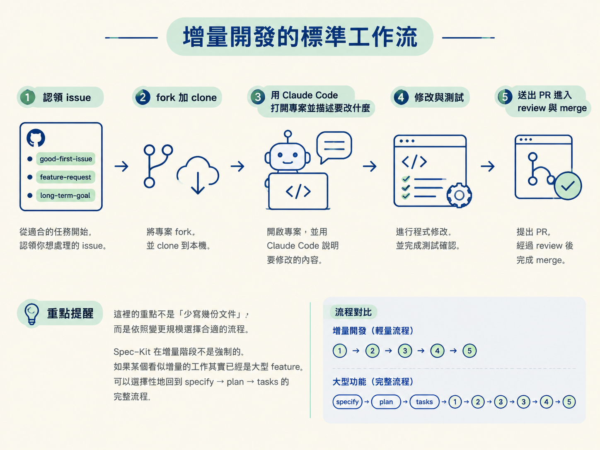
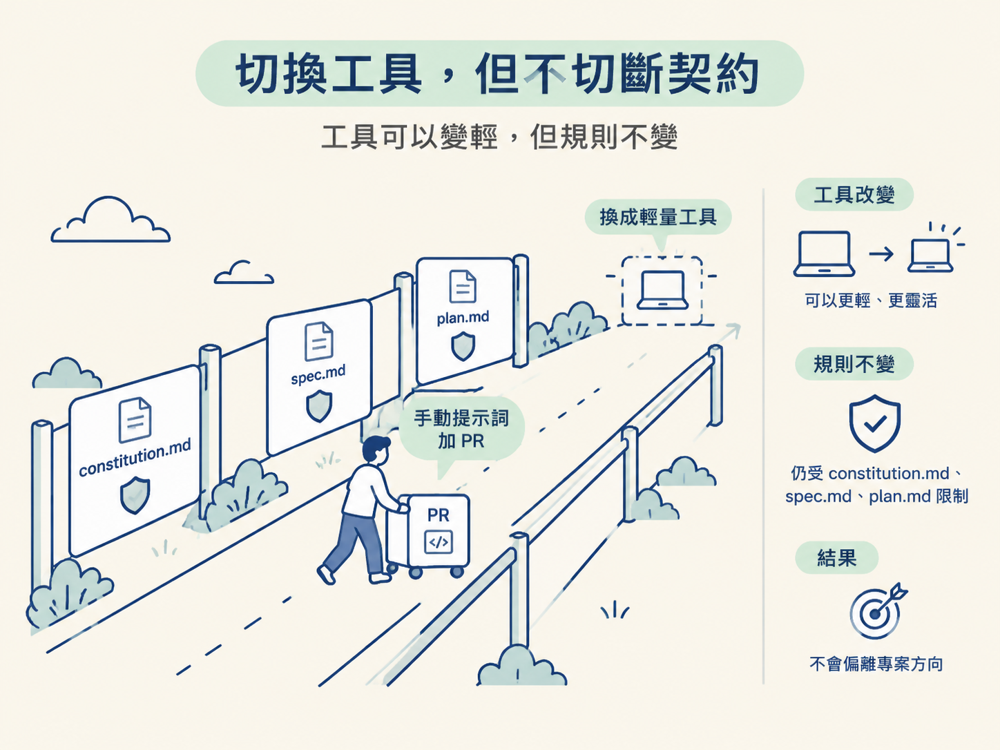

主體階段完成後，專案不會從此停止變動。接下來可能只是補一個擴展、修一個 bug，或寫一個小工具。這些工作如果每次都重新走完整規格流程，反而會讓修改速度變慢。
但工具變輕，不代表規則可以消失。這一階段要學會的是：用較快的方式處理小變更，同時繼續遵守主體階段留下的契約，讓每個社群 PR 都能安全地併回 OryxOS。
能跑一遍 issue → fork → Claude Code → PR 的增量工作流，並說清楚增量產物如何與主體階段的 artifact 對齊。
主體階段結束時，OryxOS 1.0 的核心能力已經跑起來。接下來的工作性質不同了：補一個擴展、修一個 bug，或寫一個小工具，通常只會碰到一到三個檔案，也不需要跨模組協作。
更重要的是，agent 面對的上下文變了。主體階段的上下文是「還沒定案的規格」；現在的上下文則是「已經存在的程式碼」。Claude Code 可以直接讀取目前的實作，理解要修改的位置，接著完成修改與測試。
因此，Spec-Kit 的完整流程（specify → plan → tasks → implement）在這裡通常會顯得過重。增量階段改用手動提示詞加 Claude Code：直接描述要改什麼，完成修改、測試，再送出 PR。不需要為每個小改動都產出正式的 spec 與 plan 文件。
這條流程幾乎就是開源社群的典型貢獻流程：
good-first-issue（新手入門）、feature-request（功能需求）、long-term-goal（長期目標）。這裡的重點不是「少寫幾份文件」，而是依照變更規模選擇合適的流程。Spec-Kit 在增量階段不是強制的。如果某個看似增量的工作其實已經是大型 feature，就可以選擇性地回到 specify → plan → tasks 的完整流程。

工具換了，主體階段留下的三份 artifact 仍然是增量工作的邊界。它們就像道路兩側的護欄：不一定要指示每一步怎麼走，但能避免修改偏離專案原本的方向。
| Artifact | 在增量階段的角色 |
|---|---|
constitution.md | 仍然不可協商，任何改動都不能違反它 |
spec.md | 能力的契約，社群改動必須守住核心能力的驗收標準 |
plan.md | 大致凍結，只在必要時局部調整 |
因此，手動提示詞只改變「怎麼做」，沒有改變「不能違反什麼」。例如，一個看似很小的 PR 如果引入被 constitution.md 禁止的框架抽象，仍然應該被擋下。

反過來說，如果大型 feature 已經超出原本 spec.md 的能力範圍，就不能只靠幾句提示詞硬做。這時應該重新執行 specify → plan → tasks；只有小型、邊界清楚的變更，才適合直接走手動提示詞加 PR。
OryxOS 的目標之一，是讓社群一起推進專案。因此，增量階段的工作流本質上就是社群貢獻流程。
社群提交的每個 PR，都必須尊重主體階段定下的核心能力驗收標準。這也是 constitution 與 spec 不能刪除的原因：它們不是只服務第一批開發者的暫存文件，而是後來所有貢獻者共同依循的基準。
專案交付時留下的社群文件，例如 API 參考、部署手冊與 CONTRIBUTING，也會透過這樣的一次次 PR 累積起來。每個增量改動都不必重新發明整套規則，但必須能接回原本的架構。
回顧這個節點：先用重工具把範式練熟、把契約釘死（Spec-Kit），再用輕工具快速演進、但不違約（手動提示詞加 PR）。這才是「兩階段混合」完整的意思。